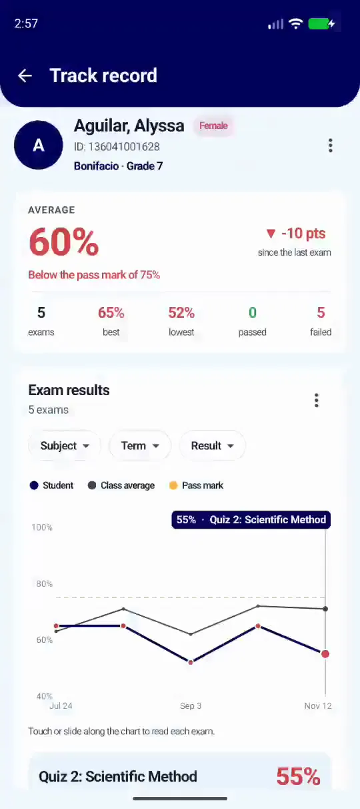
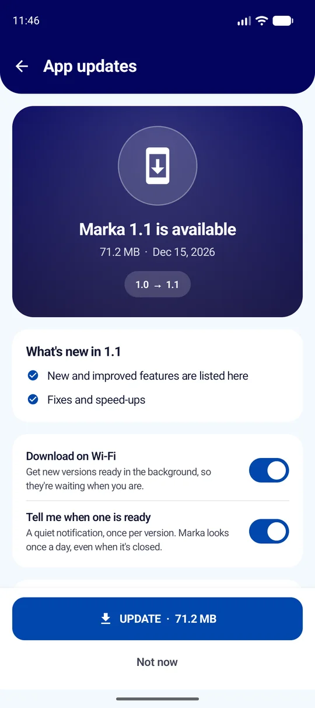

A continuing record of every learner
Every score connects to the right student and stays there, so you can follow each learner across exams and terms.
For Filipino teachers
Marka is an offline written-assessment companion for Filipino teachers. Scanning is just the start: Marka turns every exam into a lasting record of performance, with the analysis, reports and backups that come after.
Organise exams by subject, import your class roster, and scan answer sheets using your school's layout. Then comes the part that matters: Marka keeps a continuing record of student performance, so a term's work is never trapped on one phone.
After the scan
Every score connects to the right student and stays there, so you can follow each learner across exams and terms.
See results the way you need them, and spot the missing papers at once, so no learner is left out of the average.
MPS, median, passing rate and proficiency levels, plus the questions most of the class missed, so you know what to reteach.
The competencies are built in. Tag questions to them and see which ones a learner or a whole class has mastered.
Produce individual, class and school reports, or let Marka fill the Excel forms you already use.
Backup management, restoration guidance and password-protected exports mean a term's work is never trapped on one phone.
A look inside
Real screens from Marka, shown with sample data.




Choose a screen to see it. They change by themselves until you do.
How it works
Add each class and its students once, or import your roster.
Choose the questions and answer choices, then set the answer key.
Photograph each filled sheet. Marka flags doubtful answers and matches it to the right student.
Results, item analysis, MELC mastery and reports build up as you scan, and stay on record.
Plans
Every account starts with 14 days of full Premium, no payment needed. After that you keep the Free plan, or choose Premium.
₱0
Anything beyond the limits stays on your phone and can still be viewed.
Best value
₱1,499 a year
About ₱125 a month. Covers the whole school year.
₱199 a month
Everything in Premium, by the month.
Pay with GCash, Maya or card, securely through PayMongo, from inside the app. Each payment covers one month or one year and does not renew by itself.
Download
This website is the official place to download Marka. The file is signed with the Marka release key, and its fingerprint is published below so you can check it.
Download MarkaAfter downloading, the fingerprint of the file should be exactly:
Loading…
On a computer: shasum -a 256 Marka.apk. On a phone, any "file hash" app will do.
Android may warn that the file "can harm your device". That is the standard message for any app installed from a file instead of an app store. Marka keeps your records only on your phone.
By installing Marka you agree to the Terms of Service; see the Privacy Policy for how your data is handled.

Stays up to date
Once Marka is installed you never need to come back here to update it.
You're in control: the Wi-Fi download and the notification each have a switch under Settings → App updates. Marka only reads one small public file to look for updates. Nothing about you, your students or your exams is ever sent. How updates handle your privacy.
Release notes
Loading release notes…
Questions
No. Scanning, grading, results and reports all work offline. The internet is only used to look for app updates and DepEd content updates when your phone happens to be online.
On your phone. Exams, students and results belong to you and stay on the device. Use backups and password-protected exports to keep a copy somewhere safe.
Only install apps from sources you trust. This is the official Marka site, the file is signed with the Marka release key, and you can check its SHA-256 fingerprint in the Download section. Marka will also only accept an update that is signed with the same key.
Yes. Take the quick tour to see what you get, and the nine short voice-over lessons are inside the app under Settings → How to use Marka. They play without internet.
Android 8.0 or newer, with a working camera.
See how to delete your account. In the app, Settings can also clear all data on the phone.